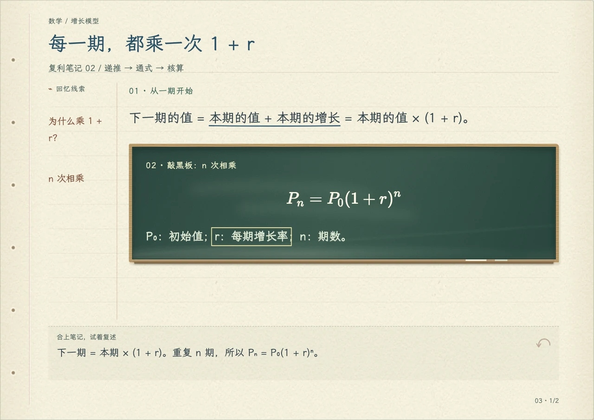

图文讲解
定义、推导与例题配合图解，按主题阅读。

定义、推导与例题配合图解，按主题阅读。
选中文字即可标记、添便签、存书签或记录疑问。
下载一个 HTML，直接打开。正文、配图和批注一同保存。
选择使用方式，复制指令，与材料一起发给 AI。
适合能读取仓库、编辑文件和运行命令的工具。
生成文件保存在工作区。
适合支持代码执行与文件下载的对话平台。
生成后下载 HTML。工具获取失败时，可上传备用构建包。
右键文件夹并选择“压缩”，再上传生成的 ZIP；也可上传文件夹内的 paper-notebook-conversation.zip。
与指令一起发给 AI，并说明希望严格按材料整理，还是允许补充讲解。题库严格模式保留原题、答案和顺序；PDF 与图片的识别疑点需要对照原件确认。